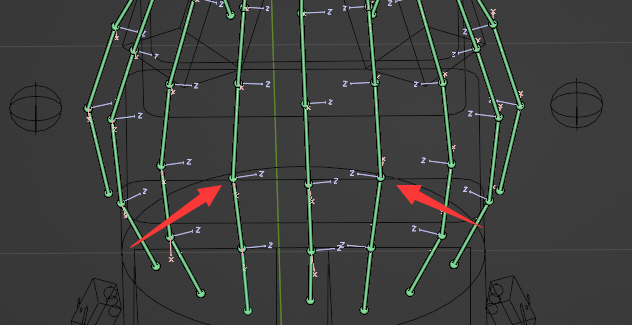
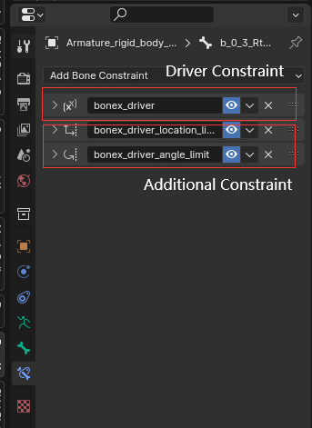

追加のコンストレイント
physx のハード コンストレイントが「ハード」ではないことに気づく場合があります (physx のハード コンストレイントの設定は、rigidbody->joint の「角度制限」と「距離制限」にあります)。 dynamicリジッドボディが大きな力を受けると、ハードコンストレイントから押しのけられる可能性があります。
これを回避するには、Blender で追加のボーン コンストレイントを追加する必要があります。
① Blender では、すべてのボーンに「connected」というプロパティがあり、これによりポーズのボーンの位置がロックされます。
② 追加のコンストレイントを使用する このアドオンには付属しています。 「connected」は限られたシーンでのみ機能します。制約のオプションをさらに増やしたい場合は、このアドオンの追加のコンストレイント機能を使用してください。
追加のコンストレイントはバッチで追加されます。 骨の軸に特に注意してください。 たとえば、ボーンが対称によって取得されている場合、その軸も反転されます。 このとき、拘束を追加する場合は軸に特に注意してください。 方向が実際に反転している場合は、制約を別途追加する必要があります
剛体変更モードの場合
Ctrl+Q、選択したポーズボーンに追加のコンストレイントを作成します。
Alt+Q、選択したポーズ ボーンの追加のコンストレイントを削除します。
BoneXアドオン内のコンストレイント
すべてのdynamicリジッドボディに対して、「COPY LOCATION」ボーン制約を使用して、動的ボーンの位置と回転がドライバー オブジェクトに追跡されるようにします(「connected」オプションがオンの場合、回転のみがドライバー オブジェクトに追跡されます)。 追加のコンストレイントはドライバー コンストレイントに基づいており、ボーンがハード コンストレイントから押し離されるのを防ぎます。
